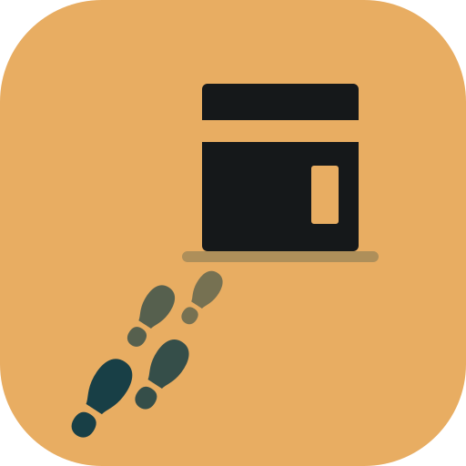

Gratis. Catatan Anda disimpan di perangkat ini saja.
Kalau terasa bermanfaat untuk persiapan umroh Anda, Anda bisa mentraktir pengembangnya secangkir kopi. Tidak wajib, dan semua fitur tetap terbuka.